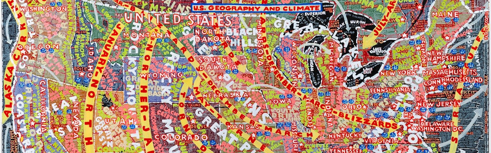

Paula Scher, born October 6th, 1948, is an American Graphic designer, illustrator, and art educator. She has worked relentlessly since the 1970’s to revolutionise the graphic design industry with her obsessive determination and creative work. Known for her bold, expressive, and often experimental approach to design, Scher has created some of the most iconic logos and graphic identities of the modern era. Her work is characterised by a dynamic mix of typography, colour, and imagery, often combining a modern sensibility with a reference to historical design traditions. But how exactly has she revolutionised graphic design? This essay discusses Paula Scher’s work, specifically the series Bring in ‘Da Noise, Bring in ‘Da Funk (1995) focusing on her bold typography. It also describes and analyses the influence that she has brought to postmodernism design and her lasting legacy over the last forty years, not only from her work, but her lasting legacy she has had on the women of design today.
Postmodernism is what came after modernist design, the prevailing aesthetic, style of the early mid 20th century, it can describe everything that came after modernism. Post modernism became a movement in the 70’s and carried through to the 80’s, it rejected formal art instructions and theories, shattering traditional concepts. This is a significant movement as it introduced a new era of freedom and a sense that ‘anything goes’. When Scher made Bring in ‘da Noise Bring in ‘da Funk (1995) it really signalled a paradigm shift, a new moment in the theatre. “Bring in ’Da Noise, Bring in ’Da Funk” is a musical history of rhythm in African American life told through dancer/choreographer. Savion, the director of the jazz movement states “I wanted to see how tap could not just tell stories, but how it could convey complicated emotions. Jazz dance does this, as do modern dance and ballet, but tap wasn’t being mined for its emotional content. It was always lopped off as an art form that’s just exuberant and fun and playful. I wanted to see how we could use tap to convey desires and – how it could become a source of delight, intensity, rage, or power”. Paula Scher figured out a way to take what she saw on stage and turn it into ink on paper. At the time, this was the peak of postmodern graphic design. Set against a specific historical backdrop, the posters utilize a sans-serif typeface and combine elements of constructivism, graphic photography, and unique expressive techniques to transcend the limitations of postmodern graphic design, achieving a harmonious unity of form and function. The series became popular as it reflected the culture and the graffiti streets of New York. Scher persuaded viewers with the posters by creating a system where the poster echoed the atmosphere of the theatre.
"Words have meaning, and typography has feeling. When you put them together it’s a spectacular combination"- Paula Scher
Paula Scher is renowned for her innovative use of typography, which is central to her graphic design approach. She has played a crucial role in reshaping how typefaces are used in design. By blending her unique visual elements with her typefaces, she creates a bold, dynamic, and expressive composition. Her typography often incorporates hand-lettered elements, oversized type, and playful distortions of form and structure. Scher knows how to use the space that is available to her. Her use of scale is central to her ability to create memorable, visually engaging designs. Whether that is through establishing hierarchy, creating an emotional impact, or trailing out her playfulness with proportion. Her approach to scale helps her communicate this power and culture through design. Scher often employs large, bold typography to create a sense of drama and immediacy. The use of exaggerated scale can convey urgency or importance. In many of her projects, the scale of the type becomes an emotional cue, drawing attention and making a statement. For Bring in da noise bring in da funk a wood typeface was used throughout the public theatre’s identity. The aim behind the posters were to raise public awareness and to create an appeal to a more diverse audience. She used typography to make the poster look “noisy” to reflect the experience of the show. So, the most striking element is typography. The hierarchy of information is established through the text using size, weight. Repetition utilizes through consistent colour palette and consistent typography use.
From establishing the tone of a brand to setting the mood for an environment, colour is an inherent and invaluable component of graphic design. Scher’s palette is all about creating excitement, evoking emotion, and using colour as a tool for visual communication and storytelling. She frequently uses primary colours (red, blue, yellow) and secondary colours (green, orange, purple), which are bright and full of energy. “Any colour is good, as long as you’re consistent,” writes Scher. “There are no ugly colours; there are only ugly colours in combination. And any colour next to white is fine. If your product is linked with a colour, and the product is associated with a certain level of quality, that colour will be perfect forever”. Scher’s use of colour is heavily influenced by Modernist and Bauhaus principles, especially their emphasis on clarity and functionalism. However, unlike the more restrained colour schemes of early modernist work. Whether it is branding, poster design, or abstract painting, her colour palettes are always energetic, intentional, and thoughtfully crafted to enhance the message or atmosphere of her projects.
During Paula Scher’s career, she found that the industry was hugely male dominated. ‘Make it Bigger by Paula Scher was published in 2002. On page 152, it titles “In the Company of Men’. Scher often occupied spaces as one of the only women in the room (Design Week Molly Long 27th November 2019). On the Design week interview Paula states that working in the business was “so sexist it was good for me”, using humour was the only way Paula felt seen. Over time this proved to have an impact on the designer, causing her to leave the business in 1989. Two years later Scher decided to join the organisation Pentagram as the first female partner. Founded in 1972, Pentagram is a design firm. Alan Fletcher, Theo Crosby, Colin Forbes, Kenneth Grange, and Mervyn Kurlansky were its founders at Needham Road, Notting Hill, London. The company has offices located at London, New York City, San Francisco, Berlin and Austin, Texas. This firm was created with the idea of different types of designers collaborating under an independently owned firm as equals. Pentagram’s unique structure enabled Scher to operate as if she were a principal at a powerful cooperate design firm while maintaining the individuality of a small practitioner. Her unapologetically bold design, her trailblazing career, and her leadership at Pentagram all serve as proof that women can not only compete in the design industry but can also redefine it. Scher’s success is a beacon for younger generations of women to follow their creative instincts, push boundaries, and never stop breaking barriers.
In conclusion Scher’s risks and her passion to challenge and experiment has revolutionised design by showing designers that it’s acceptable to have an innovative mind set and to be more playful when it comes to typography and design. Scher work is about expressing stories that resonate on an emotional level rather than solely focusing on creating functional visuals. She has revolutionised the design world with her ability to be fearless with her typography and blend art with functionality. Additionally, Paula Scher had a huge impact specifically on female designers due to her being the first women to be a principal at the Pentagram New York. Not only was she a breath of fresh air to design, but she also inspired women to be a part of the industry, increasing the popularity of typography and design. Overall, Paula Scher revolutionised design by breaking down boundaries between typography, image, and communication. Scher’s work has made her one of the most important and influential graphic designers of the late 20th and early 21st centuries.